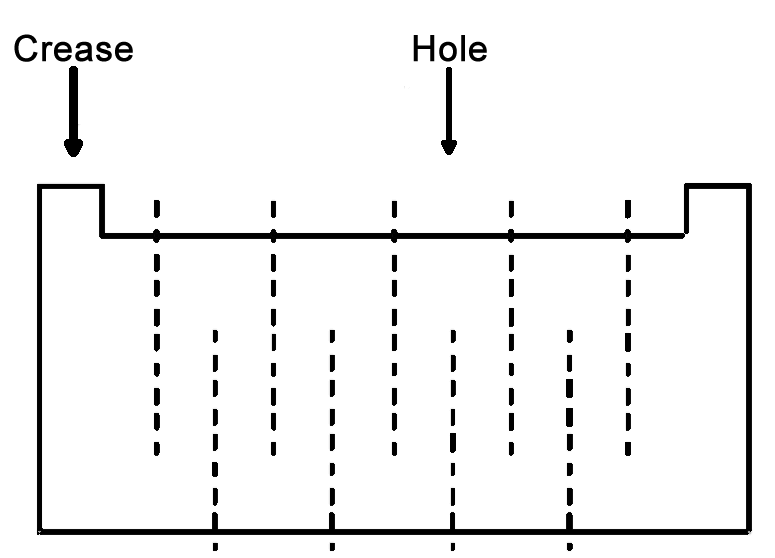

Problem ID 87939
Is it possible to cut out such a hole in a sheet of paper through which a person could climb through?
Hint
Try to fold the sheet in half and cut a narrow hole along the crease. You will get a narrow hole with wide edges. Try to increase the "length" of the edges by reducing their "width".
Solution
It is necessary to fold the sheet in half, cut a narrow hole along the crease, and then make a lot of rectilinear cuts as shown in the figure. The first cut makes a "hole", and the others increase the length of the "edges" of this hole.

Answer
Yes. It is necessary to fold the sheet in half, cut a narrow hole along the crease, and then make a lot of rectilinear cuts as shown in the figure.